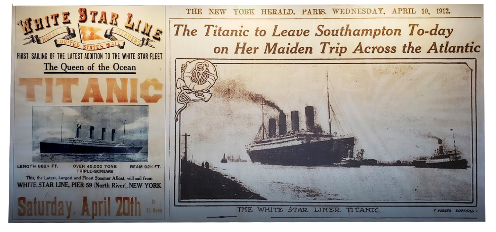
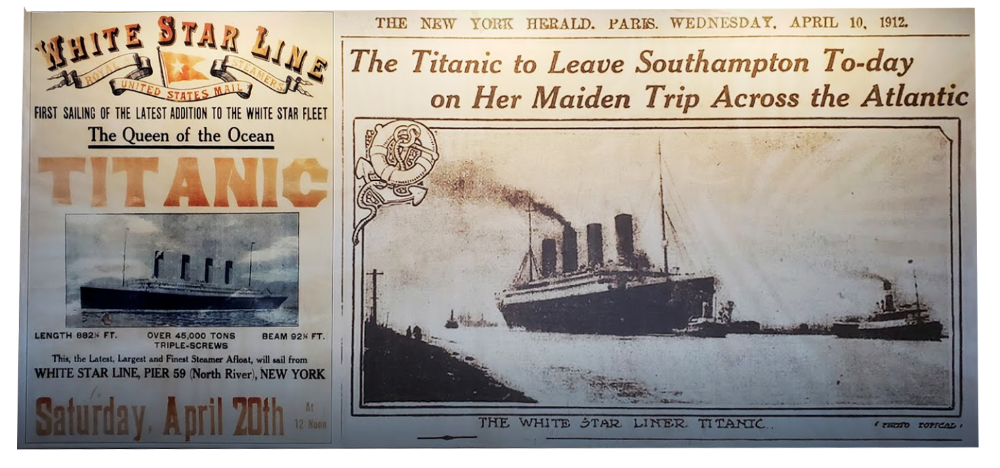

This place is unique to Pigeon Forge and the largest permanent museum dedicated to the RMS Titanic. Although the original ship's journey ended in tragedy, only fun times and an educational experience can be found at this one!

The Titanic is an iconic image to many of us, especially because of the 1997 movie that pulled at our heartstrings. Being in this museum will really allow the visitor to explore the ship for themselves.
 



It is inevitable that the Titanic Museum would have Titanic merchandise. Who wouldn't want to bring home a piece of this?